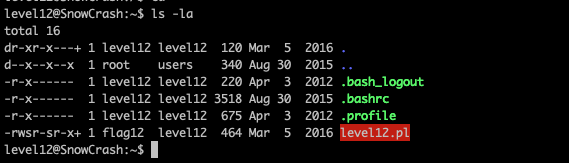

Regarder les fichiers dans le home de l'utilisateur
commande : ls -la
on peut voir un fichier Level12.pl
on regarde le programme et on voit :
un regex qui transforme les lettre lower en upper
un regex qui supprime tout apres le premier espace
execution d'une commande shell
on creer un fichier dans tmp qui va appeler getflag et vas affichier le resultat dans un autre fichier
On lance ucurl pour acceder au server et on met * au lieu de tmp pour ne pas etre en upper
on lit le fichier pour avoir le flag